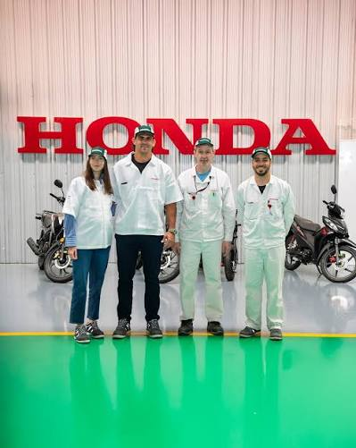
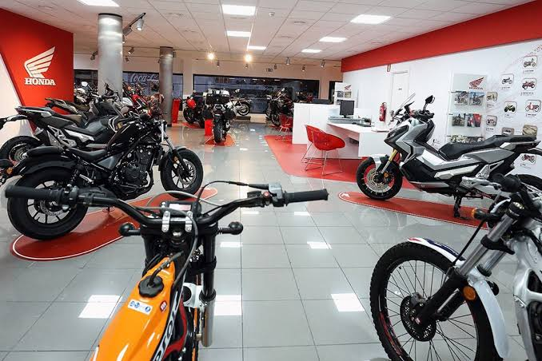

Sobre Honda Motors
Nuestra historia
Honda Motors nació de un proyecto familiar impulsado por nuestra pasión por las motocicletas y el deseo de construir un negocio propio. Comenzamos nuestro camino en un pequeño local, atendiendo a nuestros primeros clientes con dedicación y buscando brindar siempre un servicio cercano y de confianza.
Con el paso de los años, el esfuerzo, el compromiso y el apoyo de nuestra familia nos permitieron crecer. Lo que comenzó como un pequeño emprendimiento fue conviertiéndose en un espacio dedicado a los amantes de las motos, manteniendo siempre los valores que nos acompañaron desde el comienzo.

Nuestro compromiso
Una atención pensada para cada cliente
En Honda Motors trabajamos con el compromiso de ofrecer una atención cercana y personalizada. Nos interesa conocer las necesidades de cada cliente para poder brindar un asesoramiento adecuado y ayudarlo a encontrar la motocicleta que mejor se adapte a sus preferencias.
Queremos seguir creciendo sin perder los valores que nos acompañaron desde nuestros comienzos: la confianza, la responsabilidad y la pasión por las motocicletas. Para nosotros, cada cliente forma parte de la historia de Honda Motors y cada nueva moto representa el comienzo de una nueva experiencia sobre dos ruedas.

¿Dónde encontrarnos?
Visitanos en Honda Motors
Te esperamos en nuestro local para conocer nuestras motocicletas, recibir asesoramiento y encontrar la opción que mejor se adapte a vos. Queremos que cada visita sea una experiencia cercana y personalizada.